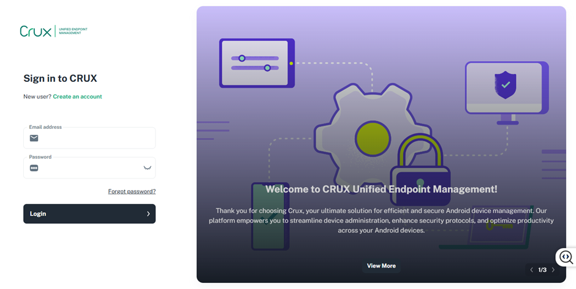
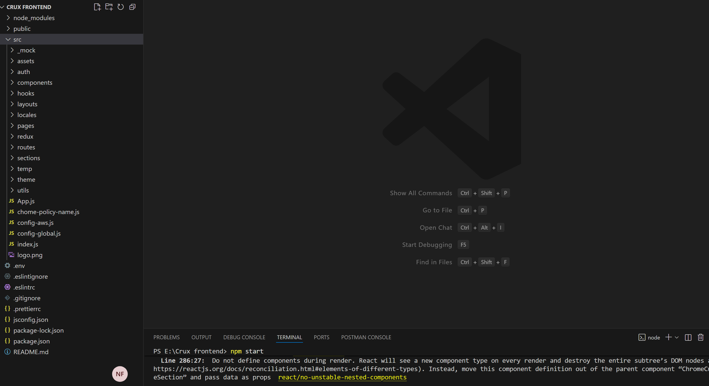
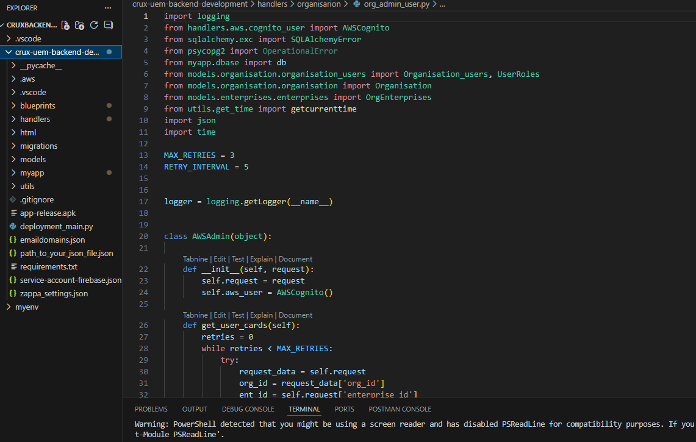

CRUX – Chrome MDM (Chrome Device Management Platform)
Overview
CRUX is an enterprise ChromeOS device management platform enabling automated provisioning, policy enforcement and centralized control of Chrome devices across organizations.
Full-Stack Development
- Developed core modules using ReactJS (frontend) and Flask (backend) with PostgreSQL + SQLAlchemy.
- Built modular UI components, REST APIs, and database models for devices, users, and policies.
Google Admin SDK Automation
- Integrated Admin SDK for Chromebook provisioning, user sync, and policy automation.
- Reduced manual IT effort by automating device and policy workflows.
Organizational Hierarchy & Access Control
- Created multi-level hierarchy (Org → Groups → Users) with inheritance & overrides.
- Handled all 1074 ChromeOS policies dynamically for users and devices.
Security & API Architecture
- Implemented JWT authentication and role-based access control for secure operations.
- Ensured encrypted credential handling and strict validation for admin workflows.
AWS Deployment
- Deployed backend on EC2, frontend on Amplify, and stored logs/reports on S3.
- Used Redis caching and Route 53 for DNS and domain routing.
Use Cases
- Remotely manage Chromebooks without physical access.
- Apply all 1,074 Chrome OS policies centrally from one dashboard.
- Control users, groups, and org units with structured access levels.
- Automate provisioning and policy updates via Google Admin SDK.
Tech Stack
- Frontend: ReactJS, Axios
- Backend: Python (Flask), REST APIs, PostgreSQL, SQLAlchemy
- Deployment: AWS EC2, Amplify, Redis, S3, Route 53
- Methodology: Agile, Scrum
Project Screenshots
Note: Due to company confidentiality policies, UI screenshots and internal code for this project cannot be shared publicly.



